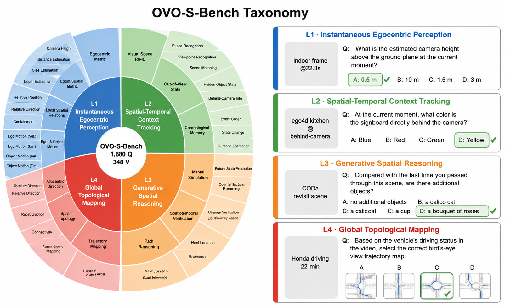
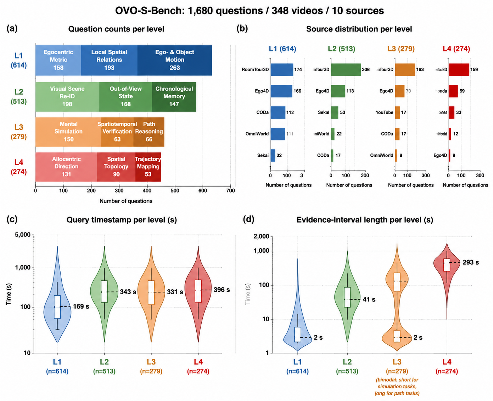
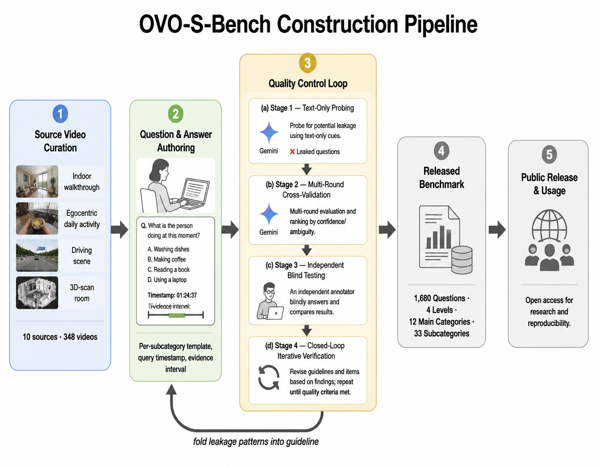

Multimodal agents in robotics, AR, and autonomous driving must reason about places and layouts from continuous egocentric streams, often using evidence outside the current view. Existing benchmarks either evaluate offline over full videos or target events rather than spatial structure. We introduce OVO-S-Bench, a fully human-annotated benchmark for streaming spatial intelligence, comprising 1,680 questions over 348 source videos. Annotation involves 12 trained annotators (each also serving as a blind cross-reviewer) across roughly 804 person-hours of multi-round quality assurance. Each question carries a query timestamp and an evidence interval, and at evaluation, the model sees only the prefix preceding the query. Questions span four levels of increasing abstraction: instantaneous egocentric perception, spatiotemporal context tracking, spatial simulation and reasoning, and allocentric mapping.
Across 38 proprietary and open-source MLLMs, Gemini-3.1-Pro trails human experts by 27 points (59.2 vs. 86.6), with allocentric mapping as the dominant bottleneck. Notably, streaming and spatially fine-tuned MLLMs underperform their own backbones. We further find that chain-of-thought reasoning amplifies spatial errors when ungrounded in the stream. By exposing these limitations, OVO-S-Bench establishes a demanding testbed for next-generation streaming spatial MLLMs.



| Model | Params | L1 | L2 | L3 | L4 | Overall | Rank |
|---|---|---|---|---|---|---|---|
| Baselines & Controls | |||||||
| Random Baseline | – | 29.8 | 35.1 | 33.3 | 27.1 | 31.3 | – |
| Text-Only (GPT-5.4) | – | 38.4 | 35.6 | 38.9 | 35.5 | 37.1 | – |
| Human (streaming) | – | 93.2 | 81.0 | 86.4 | 79.2 | 86.6 | – |
| Human (offline) | – | 97.0 | 86.2 | 94.2 | 89.2 | 92.2 | – |
| Closed-source proprietary MLLMs | |||||||
| Gemini-3.1-Pro | – | 61.9 | 64.0 | 55.9 | 54.9 | 59.2 | 🥇 1 |
| GPT-5.4 | – | 54.6 | 57.6 | 50.8 | 40.5 | 50.9 | 5 |
| Gemini-3.1-Flash-Lite | – | 54.1 | 52.2 | 54.1 | 42.8 | 50.8 | 7 |
| Grok-4.1-Fast | – | 44.8 | 46.6 | 48.5 | 35.0 | 43.7 | 19 |
| Open-source general video MLLMs | |||||||
| Qwen3-VL | 235B-A22B | 52.5 | 55.2 | 61.2 | 45.7 | 53.6 | 🥈 2 |
| Qwen3.5 | 397B-A17B | 49.6 | 55.4 | 58.1 | 45.4 | 52.1 | 🥉 3 |
| Qwen3.5 | 27B | 51.5 | 55.2 | 52.4 | 47.7 | 51.7 | 4 |
| InternVL-3.5 | 241B-A28B | 55.6 | 55.7 | 51.6 | 40.5 | 50.9 | 6 |
| InternVL-3.5 | 38B | 54.7 | 54.4 | 45.5 | 41.9 | 49.1 | 8 |
| Qwen3-VL | 32B | 50.1 | 51.9 | 51.9 | 41.2 | 48.8 | 9 |
| Qwen3-VL | 4B | 43.3 | 48.2 | 54.5 | 41.4 | 46.8 | 10 |
| Qwen3.5 | 9B | 47.5 | 49.4 | 50.2 | 36.6 | 45.9 | 12 |
| Qwen3.5 | 4B | 45.4 | 48.2 | 49.3 | 38.7 | 45.4 | 13 |
| InternVL-3.5 | 8B | 45.9 | 45.8 | 47.2 | 39.3 | 44.6 | 16 |
| Qwen2.5-VL | 7B | 40.7 | 45.5 | 45.9 | 44.7 | 44.2 | 17 |
| GLM-4.6V-Flash | 9B | 44.6 | 48.0 | 46.6 | 33.8 | 43.2 | 22 |
| Gemma-4 | 26B-A4B | 49.3 | 46.6 | 45.0 | 29.3 | 42.6 | 24 |
| Gemma-4 | E4B | 40.9 | 42.8 | 42.8 | 32.3 | 39.7 | 30 |
| Gemma-4 | E2B | 38.8 | 36.5 | 39.3 | 29.6 | 36.1 | 36 |
| Streaming video MLLMs | |||||||
| StreamForest | 7B | 46.6 | 45.2 | 49.7 | 34.9 | 44.1 | 18 |
| StreamingVLM | 7B | 38.7 | 50.5 | 41.8 | 41.2 | 43.0 | 23 |
| Flash-VStream | 7B | 18.7 | 29.9 | 22.5 | 28.7 | 24.9 | 38 |
| Token-compression and memory-based methods | |||||||
| FluxMem | 7B | 43.0 | 47.6 | 45.5 | 42.6 | 44.7 | 14 |
| HERMES | 7B | 40.9 | 45.4 | 49.4 | 42.9 | 44.6 | 15 |
| StreamingTOM | 7B | 37.2 | 48.2 | 38.7 | 33.5 | 39.4 | 31 |
| InfiniPot-V | 7B | 39.1 | 35.7 | 41.9 | 40.6 | 39.3 | 32 |
| Spatially fine-tuned MLLMs | |||||||
| VST-7B-SFT | 7B | 43.3 | 44.0 | 43.6 | 37.9 | 42.2 | 26 |
| VST-7B-RL | 7B | 45.7 | 44.2 | 40.9 | 38.0 | 42.2 | 25 |
| SenseNova-SI-1.5 | 8B | 42.1 | 42.4 | 42.7 | 32.8 | 40.0 | 29 |
| Spatial-TTT | 2B | 38.7 | 35.4 | 41.0 | 32.7 | 37.0 | 33 |
| Cambrian-S | 7B | 40.2 | 40.0 | 36.9 | 29.9 | 36.8 | 34 |
| Spatial-MLLM | 7B | 35.7 | 39.2 | 34.4 | 36.3 | 36.4 | 35 |
| Cambrian-S-LFP | 7B | 38.8 | 38.0 | 34.2 | 28.7 | 34.9 | 37 |
| Embodied foundation models | |||||||
| RynnBrain | 8B | 45.3 | 50.3 | 47.3 | 42.7 | 46.4 | 11 |
| VeBrain | 7B | 42.7 | 44.2 | 46.2 | 40.8 | 43.5 | 21 |
| RoboBrain2.5-NV | 8B | 42.9 | 46.6 | 50.6 | 34.1 | 43.6 | 20 |
| RoboBrain2.5 | 4B | 40.1 | 43.4 | 48.1 | 35.7 | 41.8 | 27 |
| Cosmos-Reason1 | 7B | 44.8 | 43.7 | 45.5 | 31.9 | 41.5 | 28 |
Numbers replicated from the paper's main results table. A submission portal and live leaderboard will follow once the dataset is released.


@misc{li2026ovosbench,
title = {OVO-S-Bench: A Hierarchical Benchmark for Streaming Spatial Intelligence in Multimodal LLMs},
author = {Li, Yifei and Liu, Pengyiang and Zang, Yuhang and Shi, Zhongyue and Fu, Qi and Hao, Hongye and Lu, Jiwen},
year = {2026},
note = {arXiv preprint, to appear}
}